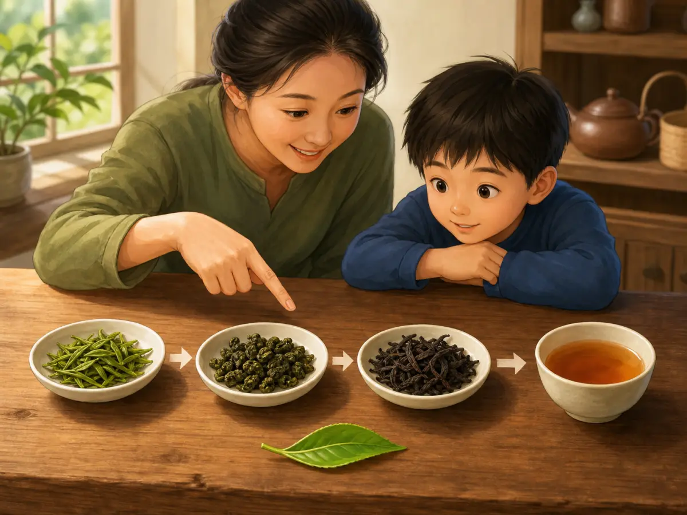

小小茶叶，大大生意
Tea: A Small Leaf with a Very Long Journey
Page 1
一片改变世界的叶子
A Leaf That Changed the World

A small tea leaf began a very long journey into daily life.
世界上最常见的饮料里，茶一定排在前面。
茶的故事，很早就在中国西南的山林里开始了。今天世界各地都种茶、喝茶，可很多关于茶的早期种植、制作和饮用经验，最早都是在中国慢慢积累起来的。
有一种说法，是四千多年前的神农氏发现的。神农氏尝遍百草，有一天中了毒，倒在一棵树下。风吹落了几片叶子，掉进他嘴里。他嚼了嚼，竟然好了-这就是茶树的叶子。这当然是传说。不过说到茶文化最早长大的地方，中国肯定是其中最重要的一处。
Tea is one of the world's most common drinks.
The story of tea began long ago in the mountain forests of southwestern China. Today people grow tea and drink tea all over the world, but many of the earliest ways to plant tea, make tea, and drink tea were slowly built up first in China.
One famous story says that more than four thousand years ago, Shennong discovered tea. Shennong tasted many plants. One day he was poisoned and collapsed under a tree. The wind blew down a few leaves. They fell into his mouth. He chewed them and felt better. Those leaves were tea leaves. Of course this is a legend. But when tea culture was first growing, China was certainly one of its most important homes.
Page 2
唐朝人怎么喝茶？
How Did Tang People Drink Tea?

Tea in the past could be prepared very differently from tea today.
唐朝人喝茶的办法，和你今天泡茶不太一样。
他们把茶叶做成茶饼，喝的时候掰一块下来，放到锅里煮。煮的时候还会加盐。对，你没有看错-加盐。甚至有人加姜、加葱、加橘子皮，煮成一锅咸咸辣辣的"茶汤"。
唐朝有一个叫陆羽的人，写了一本书叫《茶经》。它通常被看作世界上最早的一部茶学专著。陆羽把种茶、采茶、制茶、煮茶，从头到尾认真写了一遍，所以后来很多人都叫他"茶圣"。
宋朝人喝茶又不一样了。他们发明了"点茶"。
先把茶叶碾成极细的粉末，放到碗里。然后倒一点热水，用一把小刷子（叫"茶筅"）快速地搅打，直到打出厚厚的白色泡沫-很像今天你用咖啡机打奶泡。
宋朝人还会用茶粉在泡沫上写字、画画，叫"茶百戏"。一碗茶上面，可以画出山水、花鸟、甚至诗词。这种饮茶方式后来传到了日本，深刻影响了日本茶道的形成。
The way Tang people drank tea was not quite the same as the way you drink tea today.
They pressed tea leaves into tea cakes. When they wanted to drink tea, they broke off a piece and boiled it in a pot. They even added salt. Yes - salt. Some people also added ginger, scallions, or orange peel, making a salty and spicy tea soup.
In the Tang dynasty, a man named Lu Yu wrote a book called The Classic of Tea. It is usually seen as one of the earliest books in the world devoted just to tea. Lu Yu carefully wrote about growing tea, picking tea, making tea, and boiling tea from beginning to end, so later people called him the Sage of Tea.
Song people drank tea differently again. They invented whisked tea.
First they ground the tea leaves into a very fine powder and put it in a bowl. Then they poured in a little hot water and quickly whisked it with a small bamboo tool called a chasen until thick white foam appeared - a bit like making milk foam with a coffee machine today.
Song people even used tea powder to write words or paint pictures on the foam. This art was called chabaixi, or "hundred plays of tea." On top of one bowl of tea, they could make landscapes, flowers, birds, and even poems. Later this way of drinking tea spread to Japan and helped shape the Japanese tea ceremony.
Page 3
红茶-不小心发明的宝贝
Black Tea and Other Kinds

The same leaf can become very different teas depending on how it is made.
今天全世界喝的最多的茶，不是绿茶，而是红茶。
红茶是怎么来的？有一种很有名的说法，说它像是一次意外。
明朝的时候，福建武夷山有一批茶农正在做绿茶。突然来了军队，茶农们赶紧躲进山里。等军队走了，大家回来一看-茶叶全变黑了。原来茶叶堆在一起，等了太久，自己发酵了，颜色和味道全变了。
有人试着泡了一壶-咦，味道居然不错。不苦了，变得又香又甜。这种新茶，就是红茶。
除了绿茶和红茶，中国还有白茶、黄茶、乌龙茶和黑茶，一共六大茶类。所有的茶都来自同一种植物-茶树。不同的只是制作的方法。同样的叶子，怎么做、怎么等、怎么烘，出来的就是完全不同的一杯茶。
Today, the tea most widely drunk around the world is not green tea. It is black tea.
How did black tea appear? One famous story says it happened almost by accident.
During the Ming dynasty, tea farmers in the Wuyi Mountains of Fujian were making green tea. Suddenly soldiers arrived, and the tea farmers hurried into the mountains to hide. When the soldiers finally left and the farmers came back, they saw that all the tea leaves had turned dark. The leaves had been piled together too long and had oxidized, so both their color and flavor had changed.
Someone tried brewing a pot and found that it tasted surprisingly good. It was less bitter and had become fragrant and sweet. This new tea was black tea.
Besides green tea and black tea, China also has white tea, yellow tea, oolong tea, and dark tea - six major tea types in all. All of them come from the same plant, the tea plant. What changes is how the leaves are made. The same leaf, treated in different ways, left to rest for different lengths of time, and dried in different ways, becomes a completely different cup of tea.
Page 4
茶马古道和茶走向世界
Tea and Trade

Tea traveled not just into cups, but across difficult mountain roads.
中国的西南边疆，有一条险峻的山路，叫"茶马古道"。
这条路穿过云南和四川的高山深谷，通往西藏。路上全是悬崖峭壁，人和马一不小心就会摔下万丈深渊。
为什么这么危险的路还有人走？因为藏族人太需要茶了。西藏地处高原，蔬菜水果很少，藏族人主要吃牛羊肉和奶制品。茶可以帮助消化这些油腻的食物。而中原王朝需要西藏的好马-用来打仗的骏马。
于是，两边的人在这条险路上做了上千年生意：汉人把茶叶运进西藏，换回藏地的良马。这就是"茶马互市"-茶叶换战马。
十六世纪以后，欧洲的商船来到了亚洲。荷兰人最早把茶叶从中国运到了欧洲。后来，英国人爱上了喝茶。
到了十八世纪，茶已经成了英国人日常生活的一部分。随着喝茶的人越来越多，光靠从中国进口的茶叶渐渐不够了。十九世纪以后，印度、斯里兰卡、肯尼亚等国也开始大规模种茶。今天，这些地方也成了世界上重要的产茶地，各自出产着风味不同的好茶。
In China's southwestern borderlands, there was a dangerous mountain road called the Tea Horse Road.
This road ran through the high mountains and deep valleys of Yunnan and Sichuan and led toward Tibet. Along the way were cliffs and steep drops. One careless step by a person or a horse could send them falling into a deep gorge.
Why would anyone keep using such a dangerous road? Because Tibetans needed tea very much. Tibet lies on a high plateau, where there are few vegetables and fruits. Tibetan people mainly ate beef, mutton, and dairy foods. Tea helped them digest these rich foods. At the same time, the dynasties in the Chinese heartland needed strong Tibetan horses for war.
So for more than a thousand years, people on both sides traded along this dangerous road. Han traders carried tea into Tibet and brought back fine Tibetan horses. This was called the tea-horse trade - tea exchanged for war horses.
After the sixteenth century, European merchant ships came to Asia. The Dutch were among the first to carry tea from China to Europe. Later, the British fell in love with tea.
By the eighteenth century, tea had become part of everyday life in Britain. As more and more people drank it, importing tea only from China was no longer enough. Starting in the nineteenth century, India, Sri Lanka, Kenya, and other places also began growing tea on a large scale. Today these places are important tea-producing regions too, each with its own kinds of tea and its own flavors.
小结
Summary
一片叶子，从中国西南的山林里出发，走进了唐朝的茶锅、宋朝的茶碗、西藏的帐篷，飘洋过海到了英国的下午茶桌，最后变成了世界上许多人天天都会喝的一杯水。
茶的故事告诉我们：一件好东西，不需要大声喊叫。它安安静静地泡在一杯水里，自然会有人知道它的好。
A single leaf started in the mountain forests of southwestern China. Then it entered Tang tea pots, Song tea bowls, Tibetan tents, and afternoon tea tables in Britain across the sea. In the end, it became a drink that people all over the world enjoy every day.
The story of tea tells us something simple: a truly good thing does not need to shout. It sits quietly in a cup of water, and people naturally come to love it.